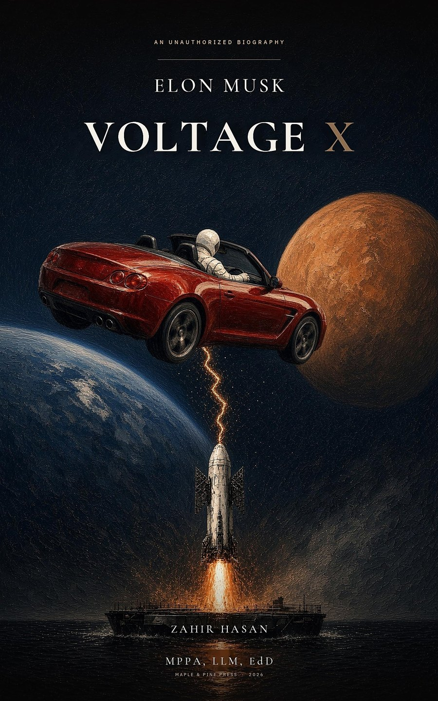

Elon Musk: Voltage X
The Complete Life — From Pretoria to the Trillion-Dollar Empire

He built the cheapest rocket in history and could not stop at the making.
On 12 June 2026, the day SpaceX went public, Forbes calculated that Elon Musk had become the first trillionaire in history. Twelve days later he was not one any more. That is the shape of the life this book sets out to record: enormous, dated, and moving.
ELON MUSK: VOLTAGE X is a complete, independently sourced biography of the most consequential and most argued-about industrialist of the century. It begins in a Pretoria bedroom in 1971 and ends on the first Friday of September 2026, with a driverless taxi carrying passengers in Austin and the richest man alive worth rather less than he had been in June.
Fifty chapters. Eight appendices. Every claim dated and sourced.
Inside:
• The South African childhood, the father, and the record of what can and cannot be established about either
• Zip2, X.com, and the coup that removed him from PayPal
• Three failed Falcon 1 launches, and the fourth that saved the company
• Tesla's two near-deaths, production hell, and the China decision that rebuilt it
• Autopilot: the safety record, the investigations, and the first jury verdict
• Starlink as infrastructure and as an instrument of state power, including Ukraine
• The $44 billion purchase of Twitter and what it actually bought
• The political conversion, the campaign, DOGE, and the government audit that followed
• xAI, Colossus, Optimus, and the machines now being built
• The fortune, quarter by quarter, and how it is actually composed
This is not a takedown and it is not a hagiography. Achievement and failure are reported at the same magnification, because both are in the record. Where the evidence is thin, the book says so. Where an assessment is offered, it is labelled as one and it comes after the material rather than in place of it.
Sources include SEC filings, court opinions and dockets, NHTSA and GAO reports, European Commission decisions, IRS Form 990 returns, company quarterly results, and Musk's own words on the record. Citations follow APA 7. A full reference list, a chronology, a legal record, a promises ledger, and a dated account of the fortune are included as appendices.
This is an independent, unauthorized biography. It is not affiliated with, endorsed by, or associated with Elon Musk or any of his companies.
Ebook and paperback · Maple & Pine Press
- Author
- Dr. Zahir Hasan
- Publisher
- Maple & Pine Press, Tokyo
- List
- Education & Practical Guides